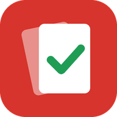

Política de Privacidade do Ticards
Última atualização: 10 de outubro de 2026
Resumo
O Ticards é um app gratuito para controlar sua coleção de cartas. Ele guarda só o necessário para funcionar: seu e-mail (se você criar uma conta) e as cartas que você marcou. Nós não vendemos seus dados. Você pode excluir sua conta e seus dados a qualquer momento pelo próprio app.
1. Quais dados o app usa
- Sem conta: sua coleção, lista de desejos e preferências (tema, coleções escolhidas) ficam só no seu aparelho.
- Com conta: seu e-mail e sua senha (guardada de forma protegida pelo Google Firebase; o Ticards nunca vê a sua senha) e os dados da coleção (cartas marcadas, lista de desejos, coleções escolhidas e opções de master set), para sincronizar entre celular e computador.
- Registros de erros (logs): ficam só no seu aparelho. Só saem dele se você mesmo tocar em "Copiar" ou "Compartilhar" em Configurações → Logs.
- Anúncios (só no app Android): o app mostra anúncios do Google AdMob. Para isso, o Google pode usar o ID de publicidade do aparelho, informações técnicas (modelo, sistema, idioma) e o endereço IP, conforme a política de anúncios do Google. Você pode redefinir ou desativar o ID de publicidade nas configurações do Android (Google → Anúncios).
2. Para que usamos
- Entrar na sua conta e sincronizar sua coleção entre aparelhos.
- Mostrar anúncios que ajudam a manter o app gratuito.
Não usamos seus dados para outras finalidades e não os compartilhamos com mais ninguém além dos serviços abaixo.
3. Serviços de terceiros
- Google Firebase (login e banco de dados) — privacidade do Firebase.
- Google AdMob (anúncios no app Android) — política de privacidade do Google.
- GitHub Pages (hospedagem do site e do app) e TCGdex (imagens das cartas), que recebem o acesso normal de qualquer site (como o endereço IP).
- Liga Pokémon: só é aberta quando você toca em "Comprar"; a partir daí vale a política da própria Liga.
4. Segurança
Toda a comunicação usa conexão criptografada (HTTPS). As regras do banco de dados só permitem que cada pessoa leia e altere os próprios dados.
5. Seus direitos e como excluir seus dados
Pela LGPD (Lei 13.709/2018) você pode acessar, corrigir e excluir seus dados.
- Excluir a conta: no app, toque em ⋮ → Conta → Excluir minha conta. Isso apaga sua conta e todos os dados da coleção na nuvem, na hora. Você pode escolher apagar também os dados guardados no aparelho.
- Ver seus dados: use ⋮ → Exportar backup para baixar tudo o que está salvo da sua coleção.
- Sem conta: desinstalar o app (ou limpar os dados do site no navegador) apaga tudo.
6. Crianças
O Ticards não é direcionado a crianças menores de 13 anos. Se você é responsável por uma criança que criou uma conta, exclua-a pelo app ou entre em contato.
7. Contato e mudanças
Dúvidas ou pedidos sobre seus dados: abra um chamado em github.com/Ticos1/projeto-cartas/issues. Se esta política mudar, a data no topo será atualizada.
Pokémon e os nomes das cartas são marcas da Nintendo / The Pokémon Company. O Ticards é um projeto independente, sem ligação com elas.